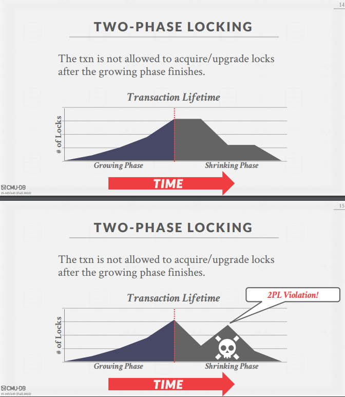

Lab4
Lab4 通过两阶段锁（2PL）实现串行化隔离级别。
参考：
MIT-6.830 Lab4 总结与备忘 thomas-li-sjtu.github.io
cmu15445 f22 lecture16 two-phase-locking slide
cmu15445 f22 lecture16 two-phase-locking note
相关知识：
- 什么是事务？四个特性？
- 并行事务存在的问题？
- 事务的隔离级别？
- 串行化？共享锁独占锁？两阶段锁协议？
- 死锁的解决方式？
InnoDB 引擎通过什么技术来保证事务的这四个特性的呢？
- 持久性是通过 redo log （重做日志）来保证的；（
flushPages） - 原子性是通过 undo log（回滚日志） 来保证的；（
restorePages） - 隔离性是通过 MVCC（多版本并发控制） 或锁机制来保证的；
- 一致性则是通过持久性+原子性+隔离性来保证；
锁管理器
锁的两种基本类型：
- 共享锁（读锁）：允许多个事务同时读取一个对象。如果一个事务持有共享锁，另一个事务也同样可以持有。
- 排他锁（写锁）：允许事务修改对象。一次只能有一个事务持有排他锁。
DBMS 包含一个集中的锁管理器，基于上面两种锁的特性，管理事务是否可以获取锁。
两阶段锁
介绍
两阶段锁（2PL）是一种并发控制协议，用于确定事务是否可以动态访问数据库中的对象。
两个阶段：
- 增长阶段：事务向锁管理器请求设置锁。
- 收缩阶段：事务在提交或回滚后，释放所有锁。
核心：如果一个事务释放了它所持有的任何一个锁，那该事务再也不能获取任何锁。
Lab 里，LockManager 相当于事务并发的调度站，因此需要确保自身变量与方法的线程安全。后续代码逻辑的线程安全基于 LockManager 来保证。

实现
SimpleDB 中实现的是页级锁。事务在 BufferPool.getPage 中获取锁。
基于 Lab2 的实现，表的增删查都要经过 BufferPool.getPage，因此只需在该方法中设置 setLock 即可。执行增删查时传入参数，指定锁的类型。
HeapFile.iterator()：共享锁，READ_ONLY。HeapFile.insertTuple()&HeapFile.deleteTuple()：排他锁，READ_WRITE。
事务：
- 提交：将事务相关的脏页刷新进磁盘。
- 回滚：恢复事务执行前的磁盘状态。
bug：HeapFile.insertTuple 中，当元组已满，新增页面时，需要将新增的页面立即写入磁盘，因为表页面数的计算基于磁盘文件的长度。SimpleDB 增删查中，目前唯一一处不经过 BufferPool，需要直接操作磁盘的逻辑。
sequenceDiagram
participant ? as XXX
participant B1 as BufferPool
participant B2 as BufferPool
participant LM as LockManager
?->>B1: getPage
activate B1
B1->>LM: setLock<br>获取锁（页级锁）
B1->>B1: 获取页（细节省略）
deactivate B1
?->>B1: transactionComplete
activate B1
alt 提交事务
B1->>B2: flushPages
B2->>B2: 将事务中涉及的脏页刷新到磁盘上
else 回滚事务
B1->>B2: restorePages
B2->>B2: Page.getBeforeImage<br>将页面数据恢复到修改前的状态
end
B1->>LM: releaseLocks<br>释放锁
deactivate B1处理死锁
- 超时等待
- 环形检测图
- 银行家算法
其他
有相当多可以拓展的地方。
- 例如隔离级别的实现。两阶段锁实现串行化是最简单的方法。MVCC 实现可重复读才是重点，InnoDB 的默认隔离级别。
- 两阶段锁虽然简单，但是也有问题，也有很多需要考虑的地方。445幻灯片里列举了很多两阶段锁后续的优化。
- 死锁的处理。死锁是个很重要的知识点，SimpleDB 的实现太简单了。
目前打算先就这样吧，往后学，赶紧做项目。等看八股的时候，对于数据库隔离级别和死锁，自己可以结合 SimpleDB 再拓展并实操一下。